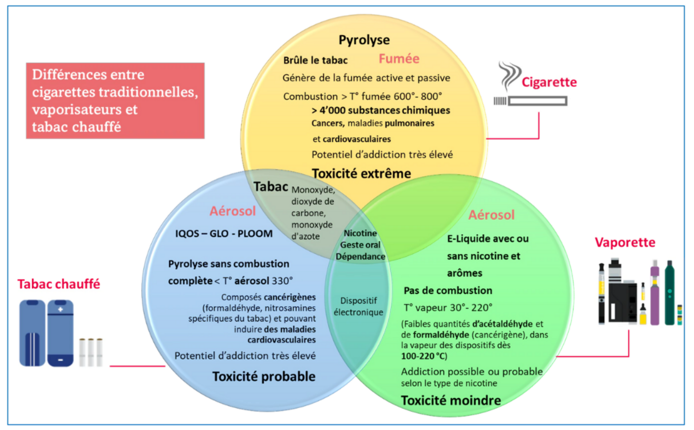

Même si celle-ci s'est largement démocratisée, la cigarette électronique et ses nombreuses dérives sont parfois inconnues ou mal comprise. Il est donc important de définir le dispositif et les différents types disponibles. De plus, comprendre pourquoi elle a été inventé et sa place comme outil de sevrage tabagique nous permet de poser un contexte sur la controverse.
Les différents types de cigarettes électroniques1

Pour certains, la CE est un dispostif médical. Cependant, son efficacité reste à prouver contrairement à d'autres dont l'utilité est prouvée.
Le Mois sans tabac démarre le 1er novembre, mais offre des avantages aux personnes qui s'y prennent au préalable. En vous inscrivant tôt, vous bénéficierez d'une consultation avec un professionnel, d'un kit gratuit comprenant un programme de 40 jours pour vous aider à arrêter de fumer, ainsi que d'un accès à une communauté d'entraide sur les réseaux sociaux.
Il existe deux types de patchs de nicotine disponibles : les patchs de 16 heures, disponibles en dosages de 10, 15 ou 25 mg, et les patchs de 24 heures, disponibles en dosages de 7, 14 ou 21 mg pour les fumeurs matinaux. Ces patchs libèrent environ 1 mg de nicotine par heure, avec une concentration maximale après environ 6 heures, remplaçant ainsi plus de 50% de la nicotine absorbée en fumant. Le taux d'abstinence à long terme avec ces patchs est augmenté de 60% par rapport à un placebo. Le dosage approprié dépend du degré de dépendance, avec des recommandations spécifiques pour chaque niveau. En cas de fortes envies, les gommes à mâcher peuvent être associées. Ils peuvent être combinés avec d'autres médicaments selon les recommandations du médecin. L'utilisation simultanée d'autres substituts nicotiniques peut augmenter les chances de succès dans l'arrêt du tabac, mais il est crucial d'utiliser des doses adéquates pour atténuer les symptômes de sevrage.
Les médicaments de deuxième intention comprennent le bupropion, également connu sous le nom de Zyban, et la varénicline, commercialisée sous le nom de Champix en France.